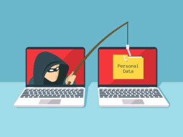
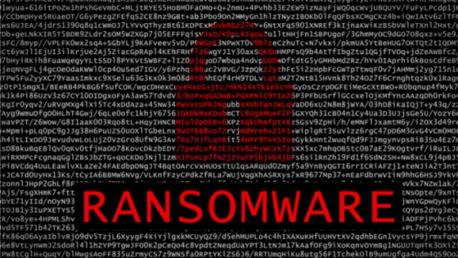
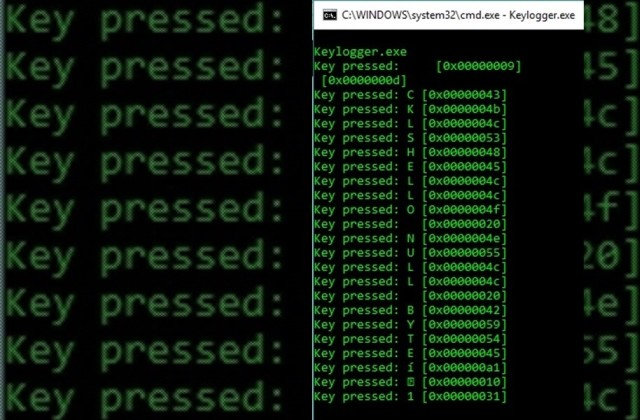
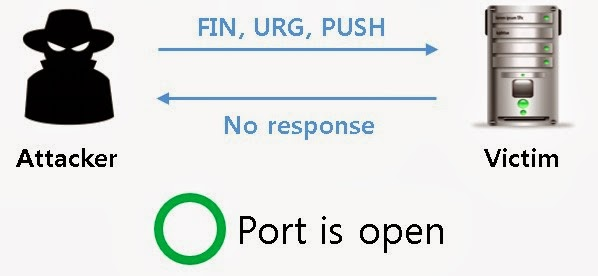
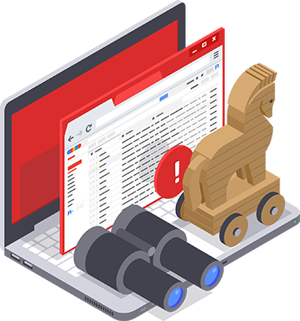

TPE Report
By Zerka and Hatu7
Interception
We saw that substitution, encryption, or again hash function can secure our data at different levels. Currently, on the Internet, nearly every coded messages are secured by hash functions, because those are nearly inviolable. But even with this, big hackings still exists. For example, recently, Facebook has been hacked, and 5 millions of users saw their accounts stolen. So, what was the way hackers managed to access all those data despite the firewalls and encryption codes or hash functions of Facebook?
For this hack, it was the “token of access” which was involved.
But, there’s a lot of different ways to hack data, hackers just have to find a flaw in the security and exploit it.
So, we will give you a lots differents of ways to secure a maximum your data:
-Use protection softwares to assure your protection against viruses. they will analyze the files and websites visited and search if there is anything malicious in it.
-Never accept the downloading of a file which you’re not at the origin :
That is called “drive-by download”, which automatically launch downloads when you load a website. Those downloads typically contain viruses, or malwares.
-Use an internet browser up to date which will assure you to be at the top of the protection and that there’s no hole in the security firewall.
-Surf at maximum on https pages, and check if the padlock is closed on the IP address bar. It will assure you that you’re on a safe page.
-Don’t open files you’re not sure where they are from (for example with suspicious Emails)
-On your smartphones, use the protocol PGP: his objective is to encrypt Emails, vocals files or text messages on your apps. Those lasts could propose you encryption methods to assure your privacy. The E2EE (End to End Encryption) is used by WhatsApp and guaranteed that you and your contact are the only ones able to see the decoded message. The staff himself can’t have the encryption key, thus can’t read the decoded message.
-If you want to save data on the cloud, encrypt them if you want to be sure that no one could consult them.
-And if you want to assure you that nobody will be able to see your data on the web, you can use the browser “Tor”, it uses decentralized routers, which don’t save any data on the computer, of your visit on the web. But this browser is known to be used to perpetrate illegal activities.
There is also VPNs (Virtual Private Network) used by companies or individuals to receive an IP address corresponding to a foreigner server, making you more untraceable.
Nowadays, everything, even information, can be trade for a certain amount of money. The hackers always finds value in our personal data. The information-gathering market became more and more important with the democratization of the Internet and technological advances.
Now, we will list you some of the most used methods by hackers to get your personal information or make viruses or malwares get inside your computer.
Phishing
Phishing consists in making believe the victim that she is communicating with someone she’s trusting in order to extract their personal data and information, such as their bank card, password, …
One of the techniques of phishing is to send emails to people and, under the name of someone trustworthy, ask them personal information or redirect them to a fake website.
Here are 3 advices to raise your protection against this risk:
-Verify the address of the website, it must start with « https » to be truly secured
-Don’t communicate your personal information easily
-Be absolutely sure of the identity of the person you’re talking to

Ransomware

The ransomware is a malicious program spreading a lot nowadays. (ex : Wannacrypt, Jaff, Locky, TeslaCrypt, Cryptolocker, etc...). It consists in encrypting some of your data (personal photos, videos, …) and threatening you to delete them or send them to people unless you pay a certain amount.
Here are 3 advices to raise your protection against this risk:
-Perform regular backups of your data.
-Don’t open messages whose provenance or form is doubtful.
-Learn to identify the extension of suspicious files. If they don’t match what you're used to open, don’t click.
Keylogging
Keylogger consists of installing on your computer a spyware - a "keylogger" - that records everything the user types on his keyboard. It mainly allows the person controlling the keylogger to gain your computer’s password or even your credit card’s information if you buy something online
Here are 5 advices to raise your protection against this risk:
-Be very careful when using a public computer or terminal that does not belong to you. Do not access any private accounts on this type of device unless you have the ability to completely erase the traces of your passage.
-Avoid installing softwares you don’t know where it came from.
-Keep all your softwares and operating system up to date.
-Equip yourself with an all-in-one protective solution including antivirus, firewall, anti-malware, anti-spam and locking tools for accessing bank accounts.
-Learn how to detect false emails, erase them from your computer and never click on the links inserted in those, especially if you are not sure of their origin. Also make sure to change your passwords regularly, always combining letters, numbers and symbols, and set a different password for each account and don’t write them anywhere, even less in a file on your computer.

Cracking
Cracking consists in finding a way to guess someone’s password. This technique work quite well on unsophisticated users who put obvious passwords like their own name, those of their children or their pet. So, if a hacker, who spied or knew his victim beforehand, tests a few passwords like the name of the victim’s children, he will have total access to the computer. That’s why it’s useful to use strong passwords. But even some seemingly robust passwords can be cracked using specific software called a “cracker” (John the ripper, L0phtCrack for Windows). There is 3 differents methods that can be used to crack a password.
• Raid by dictionary:
The software test all password stored in a “.txt” file. The method is fearsome because, in addition to its speed, it usually results since the passwords of lambda users are often existing words.
• Raid hybrid :
The software tests all passwords stored in a “.txt” file and adds some combinations to it. For example, “love01”. This method is also formidable since many people put numbers after their password, thinking that it’s reinforcing it a lot.
• Raid brute-force :
The software tests all possible combinations. So this kind of attack “technically” ends every time. Fortunately, testing all combinations takes a lot of time, so the longer your password is, the most secured it is. For example, if we take all the 96 different characters possible (lower and uppercased letters, numbers and symbols) and a password with 8 characters, there are 96^8 possible combinations, which would take way too much time to crack, even for a supercomputer.
Here are 3 advices to raise your protection against this risk:
-Choose a robust password and do not write it on a medium (papers, ...) since nothing prevents a hacker from searching the garbage cans for example:
A robust password must meet several criteria:
has more than 8 characters
uses both cases (upper/lower)
uses numbers and symbols
-Don’t use real words or something personal in your password
-Regularly change your passwords to maximize the protection
Scanning
Scanning involves in scanning all the ports on a machine by using a tool called a scanner. Depending on their reactions, the scanner will deduce if each port is open or not. It’s a very useful tool for hackers. This allows them to know the weak spots of our computer and therefore know where they can attack, especially since the scanners have evolved. Today, they can determine the operating system and applications associated with ports.
Here are 3 advices to raise your protection against this risk:
-Scanning yourself your machine to know the open ports.
-Monitor open ports with a firewall and close those that are not useful.
-Use an IDS (Intrusion Detector) or better an IPS (Intrusion Prevention).

Trojan

A Trojan takes its name from the myth of the Trojan horse. This program has an overall healthy appearance, often even attractive, but when it is executed, it performs, discreetly or not, additional actions. These actions can be of any form, such as installing a backdoor for example.
After being the target of a trojan malware, we can fear everything. An attacker can easily access your system if the Trojan installed a
backdoorA backdoor is a method consisting in installing a malware on a computer to have a remote access on it.. Recent years have seen the arrival of a new type of Trojans, very fashionable today. This trojan, behind his attractive appearance, consists of two parts. One that the hacker will send to the victim, and one that he will use once the victim’s computer has been infected. So once the victim has executed the trojan, the hacker will be able to control its computer. Often, this kind of program offers the hacker more features that the user has himself on his computer, since he can bypass even the internal windows security.
Here are 5 advices to raise your protection against this risk:
-Uninstall all programs that you aren’t familiar with.
-Reboot your computer in Safe mode.
-Install an antivirus program on your computer if it is not already done.
There are several free and quality options, such as Malwarebytes or Avast. Or you can also choose to buy a paid antivirus, which often has a larger database that allows you to detect more viruses.
-Perform a “System Restoration”.
-uninstall all programs you don’t seem familiar.
The best way to secure your data is to use a Hash function, like SHA-256.